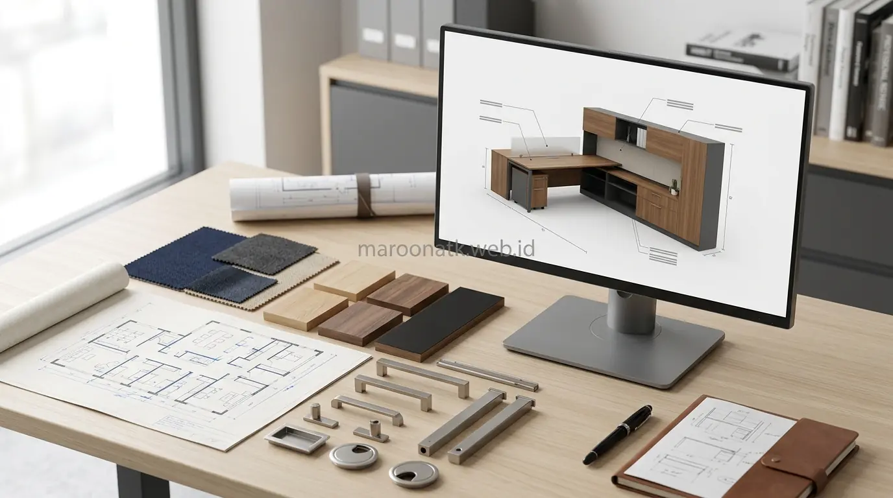

Menata interior gedung perkantoran di kawasan segitiga emas maupun kawasan bisnis Jakarta membutuhkan perencanaan ruang yang efisien dan estetis. Keterbatasan luasan lantai sewa menuntut pemanfaatan setiap meter persegi secara maksimal tanpa mengorbankan kenyamanan gerak staf.
Pentingnya Layanan Visualisasi Desain 3D Sebelum Tahap Fabrikasi
Memilih penyedia custom furniture kantor dengan fasilitas layanan desain 3D adalah langkah mitigasi risiko paling efektif bagi perusahaan. Simulasi render tiga dimensi memungkinkan tim procurement memvalidasi proporsi dimensi fisik, kecocokan finishing warna HPL, integrasi cable management, serta kelancaran alur sirkulasi ruangan sebelum pemotongan material di workshop dilakukan.
Sering kali proyek pengadaan furniture kantor mengalami kendala ketika pembeli hanya berpatokan pada sketsa denah 2D hitam-putih. Saat unit meja kerja atau partisi selesai dirakit di lokasi, tim manajemen baru menyadari bahwa lorong jalan terlalu sempit, warna lapisan tidak senada dengan karpet lantai, atau soket listrik terhalang panel belakang meja.
Dengan adanya visualisasi 3D fotorealistik berskala milimeter, seluruh pemangku kepentingan—mulai dari staf purchasing, general affairs, hingga jajaran direksi—dapat melihat representasi visual ruangan yang mendekati kondisi nyata setelah instalasi selesai. Hal ini mengeliminasi risiko salah tafsir dan meminimalisasi biaya bongkar pasang ulang.

Mengapa Custom Furniture Kantor Jauh Lebih Hemat untuk Jangka Panjang?
Optimalisasi aset interior korporat melalui durabilitas bahan olahan dan penyesuaian fungsi ruang yang presisi.
Custom Furniture vs Furniture Ready Stock: Kapan Perusahaan Membutuhkannya?
Furniture pabrikan ready stock memang menawarkan kecepatan pengiriman untuk kebutuhan standar. Namun, solusi custom furniture kantor menjadi kebutuhan mutlak pada kondisi operasional berikut:
1. Menyiasati Struktur Bangunan Tidak Beraturan
Banyak gedung perkantoran di Jakarta memiliki pilar-pilar struktural besar di tengah area kerja, sudut dinding miring, atau ceruk dinding yang tidak simetris. Furniture kustom dirancang presisi mengikuti kontur arsitektur tersebut sehingga tidak ada ruang mati (dead space) yang terbuang sia-sia.
2. Memperkuat Identitas Visual Korporat (Branding)
Area penerima tamu (reception area), ruang tunggu dewan komisaris, dan ruang rapat utama mencerminkan citra profesional institusi. Meja resepsionis dengan backlit logo akrilik, credenza eksekutif, serta meja rapat modular dengan aksen warna korporat hanya dapat diwujudkan melalui sistem pengerjaan kustom.
3. Manajemen Kabel Rapi (Concealed Cable Management)
Stasiun kerja modern membutuhkan pasokan daya laptop, kabel data LAN, kabel monitor ganda, dan charger nirkabel. Desain custom memungkinkan penanaman jalur kabel (wire trunking), soket pop-up multimedia, dan kotak penampung adaptor di dalam bodi meja tanpa ada kabel yang menjuntai di lantai.

Penyelarasan sampel material multipleks, kode HPL, dan gambar kerja teknis memastikan hasil fabrikasi furniture sesuai standar spesifikasi B2B.
Alur Kerja Standar Jasa Custom Furniture Berfasilitas Desain 3D
Vendor interior dan furniture kantor B2B yang profesional menjalankan tahapan pengerjaan terstruktur untuk memastikan kualitas produk:
- Konsultasi Kebutuhan dan Anggaran: Diskusi awal mengenai jumlah personel, fungsi departemen, preferensi gaya interior (minimalis modern, industrial, atau executive formal), dan estimasi jadwal renovasi.
- Survei Lapangan dan Pengukuran Aktual (Site Measurement): Tim teknis melakukan pengukuran detail dimensi dinding, tinggi plafon, titik stopkontak, dan jalur sirkulasi pintu masuk.
- Pembuatan Konsep Layout 2D dan Pemodelan 3D: Arsitek interior menyusun denah tata letak dan merender visual 3D lengkap dengan tekstur material, pencahayaan buatan, dan penataan furniture.
- Review dan Penyesuaian Desain (Design Approval): Presentasi desain kepada pihak manajemen untuk finalisasi ukuran, warna HPL, dan jenis aksesori sebelum penandatanganan lembar persetujuan.
- Fabrikasi di Workshop: Pemotongan papan kayu olahan menggunakan mesin berpresisi tinggi, pengeleman edging tebal, dan perakitan rangka pendukung.
- Pengiriman dan Instalasi di Lokasi: Pemasangan modul furniture di gedung kantor pada jam yang disepakati dengan pengawasan ketat agar tidak mengganggu aktivitas operasional sekitar.

Panduan Teknis Memilih Material Pengadaan Furniture Kantor Awet
Mengenal perbedaan grade multipleks, MDF, particle board, dan teknik pelapisan finishing tahan lama.
Tabel Aspek yang Perlu Diperiksa dalam Pengadaan Custom Furniture
Berikut adalah panduan checklist teknis bagi tim purchasing saat mengevaluasi penawaran dan sampel dari penyedia jasa custom furniture:
| Aspek Teknis | Yang Perlu Diperiksa | Standar Rekomendasi B2B |
|---|---|---|
| Dimensi & Ukuran | Kesesuaian dengan dimensi aktual ruangan dan jarak lorong | Lebar lorong jalan minimal 90–120 cm untuk akses evakuasi lancar |
| Visualisasi Desain | Tampilan render 3D fotorealistik dari berbagai sudut | Menampilkan pencahayaan ruang dan detail pertemuan sambungan panel |
| Material Dasar | Jenis kayu olahan dan ketebalan papan struktur utama | Plywood / multipleks tebal 15mm – 18mm bebas rongga dalam |
| Lapisan Finishing | Kualitas laminasi HPL dan ketebalan edging pelindung sudut | HPL anti-scratch dengan edging PVC 1mm – 2mm rekat mesin presisi |
| Hardware & Fitting | Engsel pintu kabinet, rel laci meja, dan sistem pengunci | Soft-closing hinges, rel double track ball-bearing, central lock |
| Lingkup Instalasi | Pembersihan sisa debu kerja dan perapian jalur kelistrikan | Termasuk setting grommet meja, uji beban, dan proteksi lantai kerja |

Inspirasi Desain Meja Kerja Modern Minimalis untuk Kantor B2B
Konfigurasi meja workstation cluster 2, 4, dan 6 seater yang dinamis dan hemat tempat.
Checklist Kredibilitas Memilih Vendor Custom Furniture di Jakarta
Sebelum menerbitkan Purchase Order (PO), pastikan penyedia jasa yang Anda pilih memenuhi indikator profesionalisme berikut:
- Ketersediaan Portofolio dan Sampel Fisik: Vendor mampu menunjukkan contoh proyek B2B terdahulu serta menyediakan swatch sample HPL dan material untuk dicek langsung oleh tim arsitek internal perusahaan.
- Kejelasan Gambar Kerja (Shop Drawing): Setiap penawaran harga harus disertai gambar detail potongan teknis, elevasi, dan penempatan grommet kabel.
- Transparansi Penawaran Biaya: Rincian penawaran mencakup ongkos kirim, jasa bongkar di lokasi, perakitan hingga tuntas, dan ketentuan faktur pajak resmi.
- Fleksibilitas Koordinasi Lapangan: Vendor terbiasa mematuhi regulasi fit-out gedung perkantoran di Jakarta (seperti izin kerja malam/akhir pekan, deposit fit-out, dan standar APD keselamatan kerja).
Untuk mendiskusikan kebutuhan furniture interior kantor Anda, silakan hubungi tim MAROON ATK guna mendapatkan konsultasi teknis dan solusi tata ruang yang optimal.
Konsultasikan Kebutuhan Pengadaan Anda
Diskusikan kebutuhan produk dan pengadaan perusahaan Anda bersama tim MAROON ATK untuk perencanaan furniture kantor yang presisi.
Kesimpulan: Presisi Desain 3D Kunci Sukses Interior Kantor
Rangkuman Poin Penting
Pemilihan jasa custom furniture kantor yang dilengkapi layanan desain 3D memberikan kepastian visual dan fungsional bagi pengadaan aset korporat.
- Akurasi Tata Ruang: Mengeliminasi ruang mati dan menyelaraskan furniture dengan pilar atau sudut ruangan gedung kantor secara sempurna.
- Mitigasi Kesalahan Produksi: Verifikasi visual sebelum fabrikasi menghindarkan perusahaan dari kerugian biaya akibat salah ukuran atau ketidaksesuaian warna.
- Standardisasi Kualitas: Penggunaan bahan multipleks bermutu, HPL tahan gores, dan hardware soft-closing menjamin umur pakai jangka panjang.
Dengan perencanaan matang dan komunikasi intensif bersama vendor terpercaya, transformasi ruang kerja yang profesional, nyaman, dan mencerminkan identitas perusahaan dapat tercapai dengan efisien.
Pertanyaan Umum (FAQ) Custom Furniture Kantor
Visualisasi desain 3D memberikan gambaran realistis mengenai proporsi ukuran furniture terhadap luas ruangan, kombinasi warna finishing HPL, kesesuaian jalur kabel kelistrikan, serta alur sirkulasi gerak karyawan sebelum proses pemotongan material di workshop dimulai.
Furniture ready stock memiliki ukuran dan bentuk standar pabrik yang kaku, sedangkan custom furniture dirancang khusus mengikuti dimensi aktual ruangan, menyamarkan pilar gedung, memaksimalkan sudut ruangan, serta menyesuaikan identitas warna korporat perusahaan.
Material multipleks atau plywood berkualitas tinggi dengan pelapis High Pressure Laminate (HPL) menjadi standar utama karena memiliki ketahanan benturan prima, tahan kelembapan, anti gores, dan tersedia dalam ratusan pilihan motif serat kayu maupun warna solid.
Dalam praktik pengadaan B2B, vendor umumnya memberikan kesempatan 2 hingga 3 kali revisi minor tata letak dan pemilihan kode warna finishing sebelum penandatanganan Berita Acara Approval Desain untuk masuk tahap fabrikasi.
Dokumen penting mencakup gambar kerja 2D teknis berdimensi presisi, visual 3D render final yang disetujui, lembar spesifikasi material (spesifikasi HPL, edging, ketebalan papan, merk hardware fitting), serta rincian timeline fabrikasi dan instalasi.

Arby Ardiansyah
Praktisi pengadaan B2B berpengalaman dalam perencanaan tata letak interior kantor, standardisasi spesifikasi furniture kerja, dan tata kelola pengadaan fasilitas perkantoran di Indonesia.